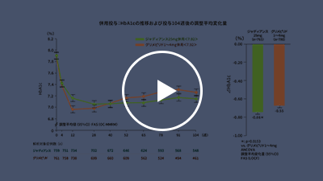

1分41秒
「1日1回の経口投与により、
優れたHbA1c低下作用を示すジャディアンス」
単独投与におけるHbA1c低下作用
現在、2型糖尿病治療には種々の血糖降下薬が用いられていますが、その中で最も新しい作用機序を有する薬剤がSGLT2阻害薬です。ジャディアンスは、そうした新しい薬剤ながら豊富なエビデンスを有し、さまざまな有効性・安全性のデータが得られています。

1分22秒
「2015年9月17日、ジャディアンスに
血糖降下薬として初となる、
心血管イベント減少のエビデンスが加わった」
EMPA-REG OUTCOME®
2015年9月17日、ジャディアンスに新しいエビデンス「EMPA-REG
OUTCOME®試験」が加わりました。本試験では心血管リスクの高い2型糖尿病患者を対象に、主要複合心血管イベントの初回発現までの期間を指標として標準治療と比較した時のジャディアンスの長期心血管安全性が検討されました。

1分50秒
「標準治療に上乗せした際の
ジャディアンス有効性とは？」
経口血糖降下薬と併用時のHbA1c低下作用
標準治療に用いられる種々の経口血糖降下薬との併用に関しても、ジャディアンスは国内第Ⅲ相併用療法長期投与試験で検討されています。既存の経口血糖降下薬とジャディアンス10mgを併用した結果、52週後のベースラインからのHbA1c調整平均変化量は－0.81～－1.00％でした。

1分18秒
「空腹時だけでなく、食後の血糖値を含め
低24時間にわたって高血糖状態を改善する
ジャディアンス」
24時間にわたる高血糖状態の改善
心血管イベント発症を阻止するためには、血糖だけでなく、血圧、脂質などを含め、包括的に管理することが大切です。また、インスリン抵抗性や食後高血糖なども心血管イベントに関連していることがわかっています*。ジャディアンスは空腹時だけでなく、食後の血糖値を含め低下させ、24時間にわたって高血糖状態を改善できることが示されています。
*科学的根拠に基づく糖尿病診療ガイドライン2013 p.153

56秒
「ジャディアンスの、長期にわたる
HbA1c低下作用とは？」
長期にわたるHbA1c低下作用
糖尿病治療の目標は、健康な人と変わらないQOL、そして寿命の確保にあります*。そのためには、長期間、良好な血糖コントロールを維持し、心血管イベントを含めた糖尿病合併症を抑制することが求められます。ジャディアンスは、長期にわたるHbA1c低下作用も報告されています。
*糖尿病治療ガイド2014-2015 p.24
EMPA-REG OUTCOME®試験の結果を含め、ジャディアンスが有する豊富なエビデンスの一部をご紹介しました。次回も引き続き、ジャディアンスの豊富なエビデンスをご紹介します。是非ご期待ください。